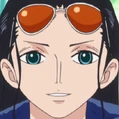

The Straw Hat Pirates, also known as the Mugiwara Pirates, Straw Hat Crew or simply the Straw Hats, are an infamous and powerful pirate crew that originated from the East Blue. They are the main focus and protagonists of the manga and anime One Piece and are led by the main protagonist Monkey D. Luffy.
1. Monkey D. Luffy

"The Captain"
The founder and captain of the increasingly infamous and powerful Straw Hat Pirates, as well as one of its top fighters. He desires to find the legendary treasure left behind by the late Gol D. Roger and thereby become the Pirate King
Episode joined: 1
2. Nami

"The Navigator"
Nami is the navigator of the Straw Hat Pirates and one of the Senior Officers of the Straw Hat Grand Fleet. She is the third member of the crew and the second to join. She is the adoptive sister of Nojiko after the two were orphaned and taken in by Bell-mère.
Episode joined: 44
3. Roronoa Zoro

"The First Mate"
Roronoa Zoro, also known as "Pirate Hunter" Zoro, is the combatant of the Straw Hat Pirates, one of their two swordsmen and one of the Senior Officers of the Straw Hat Grand Fleet. Formerly a bounty hunter, he is the second member of Luffy's crew and the first to join it. As a master of Three Sword Style, a swordsmanship style which he created during his childhood training in Shimotsuki Village, Zoro is among the three most powerful combatants of the Straw Hats, alongside Luffy and Sanji.
Episode joined: 3
4. Usopp

"The Sharpshooter"
Usopp is the sniper of the Straw Hat Pirates and one of the Senior Officers of the Straw Hat Grand Fleet. He is the fourth member of the crew and the third to join
Episode joined: 17
5. Sanji

"The Cook"
Sanji is the cook of the Straw Hat Pirates and one of the Senior Officers of the Straw Hat Grand Fleet. He is the fifth member of the crew and the fourth to join
Episode joined: 30
6. Tony Tony Chopper

"The Doctor"
Tony Tony Chopper is the doctor of the Straw Hat Pirates and one of the Senior Officers of the Straw Hat Grand Fleet. He is the sixth member of the crew and the fifth to join
Episode joined: 91
7. Nico Robin
"The Archeologist"
Nico Robin is the archaeologist of the Straw Hat Pirates and one of the Senior Officers of the Straw Hat Grand Fleet. She is the seventh member of the crew and the sixth to join
Episode joined: 130
8. Franky
"The Shipwright"
Franky is the shipwright of the Straw Hat Pirates and one of the Senior Officers of the Straw Hat Grand Fleet. He is the crew's eighth member and the seventh to join
Episode joined: 322
9. Brook

"The Musician"
Brook is the musician of the Straw Hat Pirates, one of their two swordsmen and one of the Senior Officers of the Straw Hat Grand Fleet. He is the ninth member of the crew and the eighth to join
Episode joined: 381
10. Jinbe

"The Helmsman"
Jinbe is the helmsman of the Straw Hat Pirates and one of the Senior Officers of the Straw Hat Grand Fleet. He is the tenth member of the crew and the ninth to join
Episode joined: 833